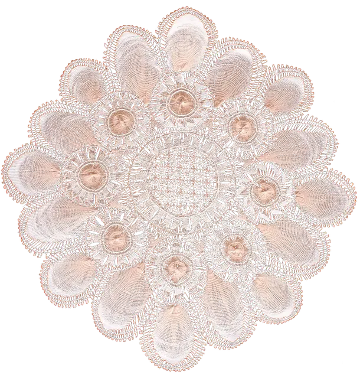

Empanada
de jamón y queso
Receta paso a paso
Así la
hacemos
hacemos
Griseldacocinera de Loren Restobar
¡Y ahora lo mejor!
El queso
que se estira
que se estira
Empanada de jamón y queso · 3,40 €
Pruébalas en
Loren
Restobar
Restobar
lorenrestobar.com
Carrer de la Muntanya 115 · Barcelona
También a domicilio
También a domicilio
Aguyje!